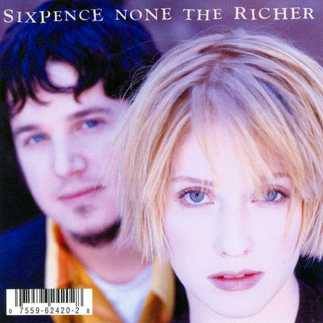

Featured Act
Sixpence None The Richer
Dreamy alt-pop with warm melodies and reflective lyrics.
Their set opens the evening with soft, nostalgic energy and a string of singalong choruses.
Set time: Friday, 18:00 on the Meadow Stage.
Why this act? The band bridges generations and fits the festival’s calm, hopeful atmosphere.